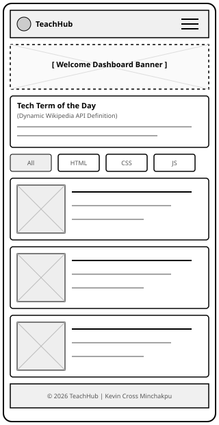
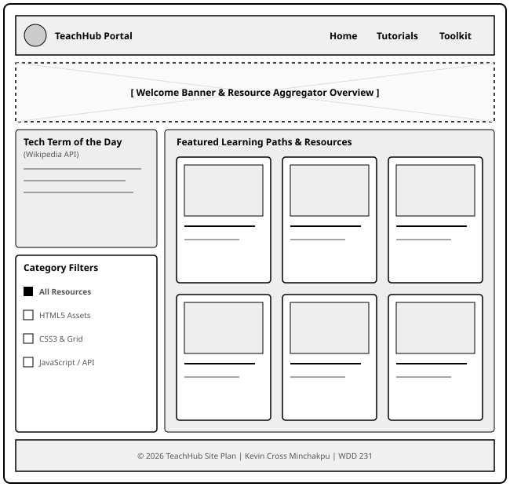

1. Site Name
Site Name: TeachHub
Reasoning: "TeachHub" communicates its function as a central educational hub tailored specifically for frontend web development students learning HTML, CSS, and JavaScript. It serves as an intuitive, user-friendly portal for resource aggregation.
Optional Domain: teachhub-dev.org
2. Site Purpose
TeachHub is a dynamic, three-page educational resource portal designed to aggregate high-quality learning assets, code documentation, and video tutorials for web development students. The site provides a centralized dashboard, dynamic API-driven tutorial explorer, and a student toolkit with interactive search and code snippet references.
3. Target Audience & Scenarios
Target Audience: Students in the BYU-Idaho web development community and beginner frontend developers learning modern HTML, CSS, and JavaScript.
User Scenarios:
- "Where can I find highly rated video tutorials specifically for CSS Grid and dynamic JavaScript Fetch API implementations?"
- "How can I quickly look up clear definitions of technical web terms or reference standard HTML/CSS code snippets while completing assignments?"
- "Where can I filter learning resources by specific languages (HTML, CSS, or JS) to focus on my current weak areas?"
4. Color Scheme
The visual palette uses a clean, modern tech-focused theme with strong contrast for readability and accessibility compliance.
5. Typography
Primary Body & Heading Font: Play
The quick brown fox jumps over the lazy dog. Used for all main structural headers (H1, H2, H3), body text, navigation elements, and form inputs.
Monospace Code Font: Fira Code
const techTerm = "Fetch API"; // Used for code snippets, tech tags, inline code elements, and terminal-style search boxes.
6. Wireframe Sketches (Home / Dashboard Page)
Below are structural layout wireframes for both Desktop Viewports and Mobile (320px Viewport) .
Mobile Layout Viewport (320px)

Desktop Layout Viewport (Large Screens)
